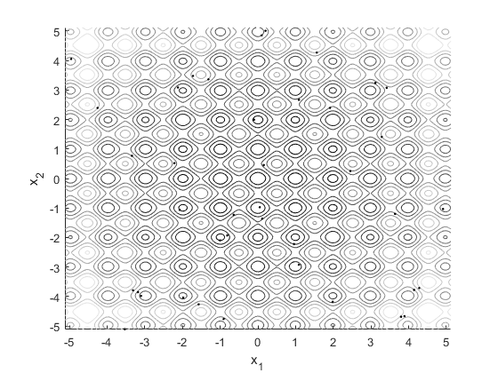
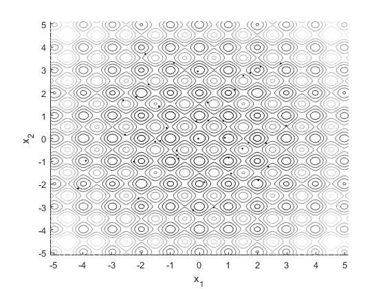
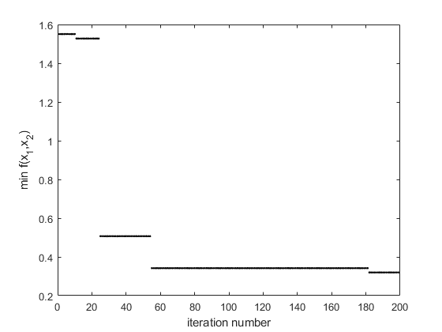

clear all
n = 2;
MaxIter = 100*n;
LSIter = 10;
m = 40;
delta = 0.01;
lk = -5.12;
uk = 5.12;
Length = delta*(uk-lk);
for i=1:m
lambda = rand(2,1);
x(:,i) = lk+lambda*(uk-lk);
f(i) = 20+x(1,i)^2+x(2,i)^2-10*cos(2*pi*x(1,i))-10*cos(2*pi*x(2,i));
end
X = [-5.12:0.01:5.12];
Y = [-5.12:0.01:5.12];
for i=1:length(X)
for j=1:length(Y)
fun(i,j) = 20+X(i)^2+Y(j)^2-10*cos(2*pi*X(i))-10*cos(2*pi*Y(j));
end
end
figure(1);clf;hold on
contour(X,Y,fun,10)
plot(x(1,:),x(2,:),'k.')
xlabel('x_1')
ylabel('x_2')
colormap(gray)
axis([-5.12 5.12 -5.12 5.12])
f_best(1) = min(f);
iteration = 1;
while iteration<MaxIter
f_best(iteration) = min(f);
counter = 1;
for i=1:m
lambda1 = rand;
while counter<LSIter
y = x(:,i);
lambda2 = rand(2,1);
if lambda1>0.5
y = y+lambda2*Length;
else
y = y-lambda2*Length;
end
if 20+y(1,i)^2+y(2,i)^2-10*cos(2*pi*y(1,i))-10*cos(2*pi*y(2,i))<f(i)
x(:,i) = y;
counter = LSIter-1;
f(i) = 20+x(1,i)^2+x(2,i)^2-10*cos(2*pi*x(1,i))-10*cos(2*pi*x(2,i));
end
counter = counter+1;
end
end
index = find(f==min(f));
x_best = x(:,index);
for i=1:m
q(i) = exp(-n*(f(i)-f(index))/sum(f-f(index)));
F = zeros(2,m);
end
for i=1:m
for j=1:m
if f(j)<f(i)
F(:,i) = F(:,i)+(x(:,j)-x(:,i))*q(i)*q(j)/(norm(x(:,j)-x(:,i))^2);
elseif j~=i
F(:,i) = F(:,i)-(x(:,j)-x(:,i))*q(i)*q(j)/(norm(x(:,j)-x(:,i))^2);
end
end
end
for i=1:m
if i~=index
lambda = rand;
F(:,i) = F(:,i)/norm(F(:,i));
for k=1:n
if F(k,i)>0
x(k,i) = x(k,i)+lambda*F(k,i)*(uk-x(k,i));
else
x(k,i) = x(k,i)+lambda*F(k,i)*(x(k,i)-lk);
end
end
end
end
iteration = iteration+1;
for i=1:m
f(i) = 20+x(1,i)^2+x(2,i)^2-10*cos(2*pi*x(1,i))-10*cos(2*pi*x(2,i));
end
end
x_best
figure(2);clf;hold on
contour(X,Y,fun,10)
plot(x(1,:),x(2,:),'k.')
xlabel('x_1')
ylabel('x_2')
colormap(gray)
axis([-5.12 5.12 -5.12 5.12])
plot(x(1,:),x(2,:),'k.')
figure(3)
plot(f_best,'k.')
xlabel('iteration number')
ylabel('min f(x_1,x_2)')
x_best =
-0.0368
-0.0163
  